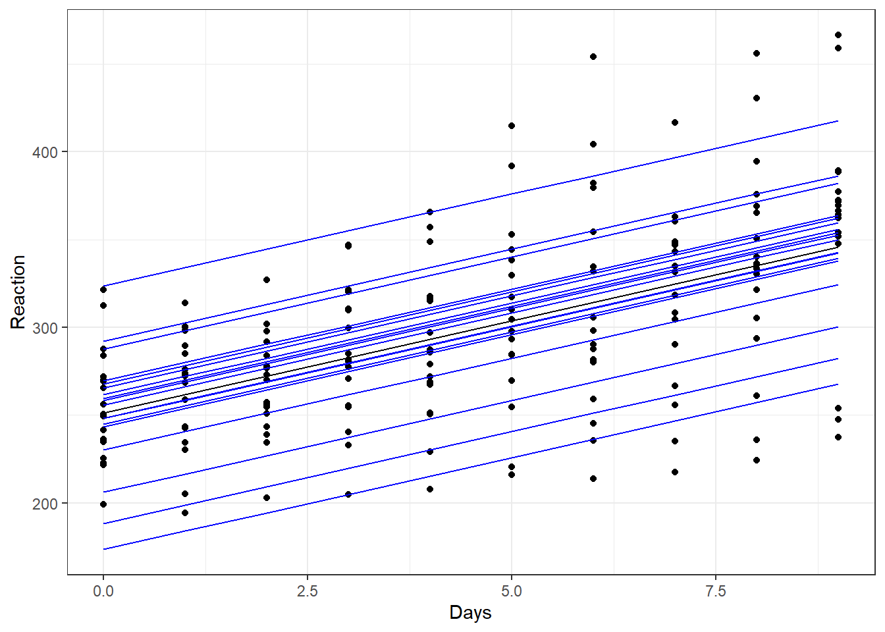

# load the required packages for fitting & visualising
library(tidyverse)
library(lme4)
library(broom)
library(broom.mixed)
library(patchwork)5 Fitting mixed models
The course materials so far have discussed the motivation behind mixed effects models, and why we might choose to include random effects.
In this section, we will learn how to fit these models in R, and how to visualise the results.
5.1 Libraries and functions
Click to expand
We’ll be using the lme4 package in R, which is by far the most common and best choice of package for this type of model. (It’s an update of the older package nlme, which you might also see people using.) The syntax is nice and simple and extends what we’ve been doing so far with the lm() function in (hopefully!) a very intuitive way.
The package also contains functions for fitting non-linear mixed effects and generalised mixed effects models - though we won’t be focusing on those here, it’s nice to know that the package can handle them in case you ever choose to explore them in future!
For Python users, the pymer4 package in Python allows you to “borrow” most of the functionality of R’s lme4, though it still has many bugs that make it difficult to run on any system except Linux. There is also some functionality for fitting mixed models using statsmodels in Python. We won’t be using those packages here, but you may wish to explore them if you are a die-hard Python user!
5.2 The sleepstudy data
We’ll be using the internal sleepstudy dataset from the lme4 package in R as an example (this dataset is also provided as a .csv file, if you’d prefer to read it in or are using Python).
This is a simple dataset taken from a real study that investigated the effects of sleep deprivation on reaction times in 18 subjects, and has just three variables:
Reaction, reaction time in millisecondsDays, number of days of sleep deprivationSubject, subject ID
data("sleepstudy")Have a look at the data more closely. You’ll notice that for each subject, we’ve got 10 measurements, one for each day of sleep deprivation. This repeated measurement means that our data are not independent of one another; for each subject in the study we would expect measurements of reaction times to be more similar to one another than they are to reaction times of another subject.
Let’s start by doing something that we know is wrong, and ignoring this dependence for now. We’ll begin by visualising the data with a simple scatterplot.
ggplot(sleepstudy, aes(x = Days, y = Reaction)) +
geom_point() +
geom_smooth(method = "lm")This gives the overall impression that we might expect - reaction time does seem to slow as people become more sleep deprived.
But, as we’ve already pointed out, ignoring the fact that subjects’ own reaction times will be more similar to themselves than to another subject’s, we should make a point of accounting for this.
5.3 Adding random intercepts
In this dataset, we want to treat Subject as a random effect, which means fitting a mixed effects model. Why Subject? There are two things at play here that make us what to treat this as a random effect:
Subjectis a grouping variable within our dataset, and is causing us problems with independence.- It’s not these specific 18 subjects that we’re interested in - they instead represent 18 random selections from a broader distribution/population of subjects that we could have tested. We would like to generalise our findings to this broader population.
To fit the model, we use a different function to what we’ve used so far, but the syntax looks very similar. The difference is the addition of a new term (1|Subject), which represents our random effect.
# construct a linear mixed effects model with Subject
# as a random effect
lme_sleep1 <- lmer(Reaction ~ Days + (1|Subject), data = sleepstudy)
# summarise the model
summary(lme_sleep1)Linear mixed model fit by REML. t-tests use Satterthwaite's method [
lmerModLmerTest]
Formula: Reaction ~ Days + (1 | Subject)
Data: sleepstudy
REML criterion at convergence: 1786.5
Scaled residuals:
Min 1Q Median 3Q Max
-3.2257 -0.5529 0.0109 0.5188 4.2506
Random effects:
Groups Name Variance Std.Dev.
Subject (Intercept) 1378.2 37.12
Residual 960.5 30.99
Number of obs: 180, groups: Subject, 18
Fixed effects:
Estimate Std. Error df t value Pr(>|t|)
(Intercept) 251.4051 9.7467 22.8102 25.79 <2e-16 ***
Days 10.4673 0.8042 161.0000 13.02 <2e-16 ***
---
Signif. codes: 0 '***' 0.001 '**' 0.01 '*' 0.05 '.' 0.1 ' ' 1
Correlation of Fixed Effects:
(Intr)
Days -0.371Okay. The syntax might have looked similar to a standard linear model, but the output does not.
In later sections of the course, we’ll discuss how to test significance based on this sort of output. In the meantime, however, to help get our head around the model we’ve fitted, we’re going to visualise it.
Here, we’ll make use of the broom and broom.mixed packages to extract fitted values from the models - the augment function essentially creates a dataframe that contains both the raw data and the fitted values (along with residuals and other useful values), which helps a lot in plotting.
# create a linear model - we'll use this in our graph
lm_sleep <- lm(Reaction ~ Days, data = sleepstudy)
# set up our basic plot
ggplot(sleepstudy, aes(x = Days, y = Reaction)) +
# create separate plots for each subject in the sample
# and add the data points
facet_wrap(facets = vars(Subject), nrow = 3) +
geom_point() +
# this adds the line of best fit for the whole sample
# (without the random effect), using coefficients
# from our simple linear model object
geom_line(data = augment(lm_sleep), aes(y = .fitted)) +
# and finally, this will add different lines of best fit
# for each subject as calculated in our mixed model object
geom_line(data = augment(lme_sleep1), aes(y = .fitted), colour = "blue")Each plot represents a different subject’s data. On each plot, we’ve added the following:
- in black we have the same overall line of best fit from our original (incorrect) linear model.
- in blue are the individual lines of best fit for each subject. These lines move up and down the plot relative to the global line of best fit. This reflects the fact that, though all subjects are declining as they become more sleep deprived, some of them started with slower baseline reaction times, with different y-intercepts to match. Subject 310, for instance, seems to have pretty good reflexes relative to everyone else, while subject 337 isn’t quite as quick on the trigger.
We can visualise the same model slightly differently, to allow us to look at the set of lines of best fit together. Here, we will create a plot that doesn’t have facets (but still shows us the same model predictions):
ggplot(sleepstudy, aes(x = Days, y = Reaction)) +
geom_point() +
# include the global line of best fit
geom_line(data = augment(lm_sleep), aes(y = .fitted)) +
# include individual lines of best fit
geom_line(data = augment(lme_sleep1), aes(y = .fitted, group = Subject),
colour = "blue")
The global line of best fit is in the middle (in black), with each of the individual subject lines of best fit around it.
From this plot, we can see that the gradient of each of these blue lines is still the same as the overall line of best fit. This is because we’ve added a random intercept in our model, but have kept the same slope.
This reflects an underlying assumption that the relationship between sleep deprivation and reaction time is the same - i.e. that people get worse at the same rate - even if their starting baselines differ.
We might not think that this assumption is a good one, however. And that’s where random slopes come in.
5.4 Adding random slopes
To add a random slope as well as a random intercept, we need to alter the syntax slightly for our random effect. Now, instead of (1|Subject), we’ll instead use (1 + Days|Subject). This allows the relationship between Days and Reaction to vary between subjects.
Let’s fit that new model and summarise it.
lme_sleep2 <- lmer(Reaction ~ Days + (1 + Days|Subject), data = sleepstudy)
summary(lme_sleep2)Linear mixed model fit by REML. t-tests use Satterthwaite's method [
lmerModLmerTest]
Formula: Reaction ~ Days + (1 + Days | Subject)
Data: sleepstudy
REML criterion at convergence: 1743.6
Scaled residuals:
Min 1Q Median 3Q Max
-3.9536 -0.4634 0.0231 0.4634 5.1793
Random effects:
Groups Name Variance Std.Dev. Corr
Subject (Intercept) 612.10 24.741
Days 35.07 5.922 0.07
Residual 654.94 25.592
Number of obs: 180, groups: Subject, 18
Fixed effects:
Estimate Std. Error df t value Pr(>|t|)
(Intercept) 251.405 6.825 17.000 36.838 < 2e-16 ***
Days 10.467 1.546 17.000 6.771 3.26e-06 ***
---
Signif. codes: 0 '***' 0.001 '**' 0.01 '*' 0.05 '.' 0.1 ' ' 1
Correlation of Fixed Effects:
(Intr)
Days -0.138We can go ahead and add our new lines (in red) to our earlier facet plot. Only the last line of code is new here:
ggplot(sleepstudy, aes(x = Days, y = Reaction)) +
facet_wrap(facets = vars(Subject), nrow = 3) +
geom_point() +
# the global line of best fit
geom_line(data = augment(lm_sleep), aes(y = .fitted)) +
# our previous lines of best fit, with random intercepts
# but constant slope
geom_line(data = augment(lme_sleep1), aes(y = .fitted), colour = "blue") +
# our lines of best with random intercepts and random slopes
geom_line(data = augment(lme_sleep2), aes(y = .fitted), colour = "red") While for some of our subjects, the red, blue and black lines look quite similar, for others they diverge a fair amount. Subjects 309 and 335, for instance, are displaying a remarkably flat trend that suggests they’re not really suffering delays in reaction time from their sleep deprivation very much at all, while subject 308 definitely seems to struggle without their eight hours.
Let’s compare those different red lines, representing our random intercepts & slopes model, on a single plot. This is the same code as we used a couple of plots ago, except the last line is now different:
ggplot(sleepstudy, aes(x = Days, y = Reaction)) +
geom_point() +
# include the global line of best fit
geom_line(data = augment(lm_sleep), aes(y = .fitted)) +
# include individual lines of best fit
geom_line(data = augment(lme_sleep2), aes(y = .fitted, group = Subject),
colour = "red")Visualising all of our lines of best fit simultaneously like this makes it clearer what it means to have both random intercepts and random slopes. Each line of best fit starts in a slightly different place, and also has a different gradient.
5.4.1 Fitting random slopes without random intercepts
It’s quite unusual to fit a model with random slopes but without random intercepts - but it’s absolutely possible.
The lme4 package includes “implicit random intercepts”, meaning that we don’t actually need to specify the 1 in our random effects structure for random intercepts to be fitted.
Try running the following, and compare the two outputs - these models are identical:
lme_explicit <- lmer(Reaction ~ Days + (1 + Days|Subject), data = sleepstudy)
lme_implicit <- lmer(Reaction ~ Days + (Days|Subject), data = sleepstudy)
summary(lme_explicit)
summary(lme_implicit)If we were determined to remove the random intercepts, we have to explicitly tell lme4 not to fit them, like this:
lme_slopesonly <- lmer(Reaction ~ Days + (0 + Days|Subject), data = sleepstudy)
summary(lme_slopesonly)Linear mixed model fit by REML. t-tests use Satterthwaite's method [
lmerModLmerTest]
Formula: Reaction ~ Days + (0 + Days | Subject)
Data: sleepstudy
REML criterion at convergence: 1766.5
Scaled residuals:
Min 1Q Median 3Q Max
-3.5104 -0.5588 0.0541 0.6244 4.6022
Random effects:
Groups Name Variance Std.Dev.
Subject Days 52.71 7.26
Residual 842.03 29.02
Number of obs: 180, groups: Subject, 18
Fixed effects:
Estimate Std. Error df t value Pr(>|t|)
(Intercept) 251.41 4.02 161.00 62.539 < 2e-16 ***
Days 10.47 1.87 21.68 5.599 1.32e-05 ***
---
Signif. codes: 0 '***' 0.001 '**' 0.01 '*' 0.05 '.' 0.1 ' ' 1
Correlation of Fixed Effects:
(Intr)
Days -0.340You should see that the random intercepts have now disappeared from the output.
ggplot(sleepstudy, aes(x = Days, y = Reaction)) +
geom_point() +
# include the global line of best fit
geom_line(data = augment(lm_sleep), aes(y = .fitted)) +
# include individual lines of best fit
geom_line(data = augment(lme_slopesonly), aes(y = .fitted, group = Subject),
colour = "purple")Indeed, looking at each of the lines of best fit here, we can see that they all have the same intercept (i.e., the same value of y when x = 0), but with differing slopes.
5.5 Two-level models
All of the mixed models we’ve fitted to these data so far (with random slopes and/or random intercepts) can be described as two-level models.
A standard linear model would be a one-level model, where we have true independence and no clustering/grouping variables.
But for this dataset, the Subject variable creates clusters, so we have a different set of Reaction times for each Subject. Whether we choose to fit random intercepts, slopes, or both, this overall structure between the variables remains the same, creating a hierarchy with two levels. Hence, a two-level model!
Later in the course, we will look at more complicated models, where we have multiple clustering variables that we want to generate random effects for, due to more complex experimental designs.
5.5.1 Equations & notation
For those who are interested in notation and equations, the drop-down box below gives a little more detail on how this works for a linear mixed effects model.
This subsection skews a bit more in the maths direction, and won’t be needed by everyone who uses mixed models in their research. But, it’s included here as bonus material for anyone who finds equations helpful, or for those who might need this for reporting on and reading about mixed models!
Linear mixed models notation
For the sleepstudy dataset, a standard linear model Reaction ~ Days would be written in the format:
\[ y = \beta_{0} + \beta_{1}x_{1} + \epsilon \]
The \(x\) variable here is, of course, Days, and \(y\) is our response variable Reaction.
In this equation, \(\beta_{0}\) represents the intercept, and \(\beta_{1}\) represents the slope or gradient. Each of these is either a single fixed number, or, in the case of a categorical predictor, a set of fixed means for the groups.
The \(\epsilon\) at the end represents our error, or noise. In the case of linear model, we measure this by calculating the residuals. As you already know from standard linear models, we assume that these residuals are random and normally distributed. So, we could additionally note that:
\[ \epsilon ∼ N(0, \sigma^2) \]
This is just fancy shorthand for: “the errors are drawn from a normal distribution, which has a mean of 0 and variance \(\sigma^2\)”. This variance is something we need to estimate, in order to perform our regression analysis.
Random intercepts model
When we add random effects to deal with the clustering variable Subject, however, we are doing more than just estimating a fixed mean or coefficient.
That’s because we’re actually estimating a distribution of coefficients whenever we estimate a random effect.
So, when we include random intercepts in our model Reaction ~ Days + (1|Subject), we are not just estimating three numbers. We estimate an intercept for each Subject in the dataset. And, we are assuming that those intercepts have been drawn from a normal distribution with mean 0 - this is a baked-in assumption of a linear mixed model (more on assumptions in a later section).
For this model, the equation for our model is now written like this:
\[ y_{ij} = \beta_{0j} + \beta_{1}x_{ij} + \epsilon_{ij} \]
Where have these extra subscript letters come from?
Well, previously we didn’t bother with this, because a standard linear model only has one level. Now, we have a two-level model, so we use \(i\) and \(j\) to refer to those different levels.
Here, \(j\) would represent the different levels of our clustering variable Subject. The letter \(i\) then represents the set of values within each cluster \(j\). So, \(ij\) in our subscripts refers to our entire set of response/outcome values Reaction, which here are measured at the level of individual Days within each Subject.
The term \(\beta_{0j}\) tells us that we have random intercepts. For each of our \(j\) clusters, there is a separate \(\beta_{0}\). You will sometimes see a random effect broken down further, like this:
\[ \beta_{0j} = \gamma_{00} + U_{0j} \]
Here, the \(\gamma_{00}\) refers to the “grand intercept”, i.e., the average intercept across all groups. This is a fixed effect, one single value that doesn’t change, and we need to estimate it in order to be able to then estimate \(U_{0j}\). It’s conventional - though not compulsory - to use \(\gamma\) to represent fixed/global coefficients like this.
The \(U_{0j}\) bit then refers to the set of deviations from that grand intercept, one for each of your clusters/groups. These deviations should be normally distributed with mean 0 and variance \(\tau^2_{00}\). Again, it’s conventional to use \(\tau^2\) to refer to the variance of random effects specifically (rather than \(\sigma^2\), which we used for the variance of our residuals). You will sometimes see people use letters other than \(U\) to refer to the set of deviations/coefficients, especially when there are more than two levels in the model (more on that in a later section.)
\[ U_{0j} ∼ N(0, \tau^2_{00}) \]
Once again, we also assume that our errors \(\epsilon_{ij}\) are normally distributed around 0 as well, just as we did with the standard linear model.
Random intercepts & random slopes model
Now let’s look at what happens when we add a second random effect, as in the model Reaction ~ Days + (1 + Days|Subject). The equation now looks like this.
Level 1:
\[ y_{ij} = \beta_{0j} + \beta_{1j}x_{ij} + \epsilon_{ij} \]
Level 2:
\[ \beta_{0j} = \gamma_{00} + U_{0j} \] \[ \beta_{1j} = \gamma_{10} + U_{1j} \]
where,
\[ \left( \begin{array}{c} U_{0j} \\ U_{1j} \end{array} \right) ∼ N \left( \begin{array}{c} 0 \\ 0 \end{array} , \begin{array}{cc} \tau^2_{00} & \rho_{01} \\ \rho_{01} & \tau^2_{10} \end{array} \right) \]
We now have two random effects instead of one. We can tell this because we’re now writing \(\beta_{1j}\) and specifying an additional equation for it, instead of just writing \(\beta_{1}\) for a single fixed value of the slope.
Admittedly, that last bit looks more complicated than before. We won’t go into too much detail, but what’s happening on the right is known as a “variance-covariance” matrix. When you include multiple random effects in a mixed model, the correlations between those random effects are also estimated. So we actually make assumptions about the joint distribution that all of the random effects are being drawn from. If this statement alone doesn’t satisfy your curiosity, you might find this link a useful resource with some handy visualisations of how this works!
If that’s a bit more complicated than you’re interested in, don’t worry. You don’t need to understand all that maths to be able to used a mixed effects model. It boils down to the same thing: that random effects are a set of coefficients with some variance, and we make assumptions about their distribution(s).
A helpful summary
This table summarises and defines each of the terms included in the equation(s) above.
| Parameter | Description |
|---|---|
| \(y_{ij}\) | Response/outcome; value of Reaction for subject \(j\) on day \(i\) |
| \(x_{ij}\) | Predictor; value of Days for subject \(j\) on day \(i\) |
| \(\beta_{0j}\) | Level 1 intercept parameter, containing a fixed and a random effect |
| \(\gamma_{00}\) | Fixed effect; grand (average) intercept |
| \(U_{0j}\) | Random effect; deviation from grand intercept for subject \(j\) |
| \(\beta_{1j}\) | Level 1 slope parameter, containing a fixed and a random effect |
| \(\gamma_{10}\) | Fixed effect; grand (average) slope |
| \(U_{1j}\) | Random effect; deviation from grand slope for subject \(j\) |
| \(\epsilon_{ij}\) | Error/residual (difference between real value and predicted value) of Reaction for subject \(j\) on day \(i\) |
| \(\tau^2_{00}\) | Variance of random intercepts \(U_{0j}\) |
| \(\tau^2_{10}\) | Variance of random slopes \(U_{1j}\) |
| \(\rho_{01}\) | Covariance between random effects \(U_{0j}\) and \(U_{1j}\) |
5.6 Exercises
5.6.1 Irrigation
Exercise
Level:
This example uses the irrigation dataset. The study is a split-plot design, used for an agricultural trial aimed at maximising crop yield.
Two crop varieties and four different irrigation methods were tested across eight fields available for the experiment. Only one type of irrigation method can be applied to each field, but the fields are divided into two halves with a different variety of crop planted in each half.
irrigation <- read_csv("data/irrigation.csv")There are four variables in total:
fieldID, f1 through f8irrigationmethod used, i1 through i4varietyof crop, v1 or v2yield, the total crop yield per field
For this exercise:
- Visualise the data
- Fit a mixed model
Does it look as if irrigation method or crop variety are likely to affect yield?
Worked answer
Visualise the data
This is quite a small dataset, with only 16 data points. We want to know whether irrigation, on the x axis, and/or variety, split by colour, affect yield; so let’s put all of those variables on the same plot:
ggplot(irrigation, aes(x = irrigation, y = yield, colour = variety)) +
geom_point()It looks as if there could be some differences between irrigation levels, but the effect of variety looks less clear.
Our data points do all appear to be paired together, and this is almost certainly related to our field variable, which we can see if we alter the plot above:
ggplot(irrigation, aes(x = irrigation, y = yield, colour = field)) +
geom_point()The effect of field, then, seems quite strong.
Fit the model
We can see from the plots above that we need to consider field as an important grouping variable. We’d like to account for variance between fields in our model, but we’re not interested in this specific set of fields: so, we’ll treat it as a random effect.
We’ll also include fixed effects of irrigation and variety, as well as their interaction, since these are our predictors of interest.
We don’t have enough observations in this dataset to add random slopes, so we only have random intercepts by field. (If you’re curious, have a look at the error message that occurs if you try to fit random slopes for variety by field; feel free to ask a trainer about it.)
lme_yield <- lmer(yield ~ irrigation*variety + (1|field), data = irrigation)
summary(lme_yield)Linear mixed model fit by REML. t-tests use Satterthwaite's method [
lmerModLmerTest]
Formula: yield ~ irrigation * variety + (1 | field)
Data: irrigation
REML criterion at convergence: 45.4
Scaled residuals:
Min 1Q Median 3Q Max
-0.7448 -0.5509 0.0000 0.5509 0.7448
Random effects:
Groups Name Variance Std.Dev.
field (Intercept) 16.200 4.025
Residual 2.107 1.452
Number of obs: 16, groups: field, 8
Fixed effects:
Estimate Std. Error df t value Pr(>|t|)
(Intercept) 38.500 3.026 4.487 12.725 0.000109 ***
irrigationi2 1.200 4.279 4.487 0.280 0.791591
irrigationi3 0.700 4.279 4.487 0.164 0.877156
irrigationi4 3.500 4.279 4.487 0.818 0.454584
varietyv2 0.600 1.452 4.000 0.413 0.700582
irrigationi2:varietyv2 -0.400 2.053 4.000 -0.195 0.855020
irrigationi3:varietyv2 -0.200 2.053 4.000 -0.097 0.927082
irrigationi4:varietyv2 1.200 2.053 4.000 0.584 0.590265
---
Signif. codes: 0 '***' 0.001 '**' 0.01 '*' 0.05 '.' 0.1 ' ' 1
Correlation of Fixed Effects:
(Intr) irrgt2 irrgt3 irrgt4 vrtyv2 irr2:2 irr3:2
irrigation2 -0.707
irrigation3 -0.707 0.500
irrigation4 -0.707 0.500 0.500
varietyv2 -0.240 0.170 0.170 0.170
irrgtn2:vr2 0.170 -0.240 -0.120 -0.120 -0.707
irrgtn3:vr2 0.170 -0.120 -0.240 -0.120 -0.707 0.500
irrgtn4:vr2 0.170 -0.120 -0.120 -0.240 -0.707 0.500 0.500This output shows us that our global average yield is 38.5 (the Intercept line for the fixed effects results). Relative to this, the variance of our field random effect is reasonably big at 16.2. Meanwhile, the differences for each of the different varieties and irrigation methods are all quite small.
Visualise the model
Since we’re not comparing multiple different models in the same plot, we can be more efficient by putting the augmented model object directly into the first line of our ggplot function. Since we have very few observations per group we plot this using points, but for more observations we may have wanted to use boxplots:
ggplot(augment(lme_yield), aes(x = irrigation, y = yield, colour = variety)) +
geom_point(position = position_dodge(width = 0.5))You might be looking at the above graph, and wonder what impact the random effect of field has had on these model predictions. Well, if we tweak the graph a little bit and add the individual predicted values by variety, irrigation and field all at once, we can get a sense of how the predicted values have actually moved closer, or “shrunk”, towards one another.
Another way to think about this is: some of the variance in the yield response variable, which in a simple linear model would be attributed entirely to our fixed predictors, is being captured instead by the differences between our random fields. So, the final effects of irrigation * variety are lessened.
In the next session of the course, we’ll talk about how to check whether these results are significant.
ggplot(augment(lme_yield), aes(x = irrigation, y = yield, colour = variety)) +
geom_point(aes(shape = "observed"), size = 3) +
geom_point(aes(y = .fitted, shape = "predicted"), size = 3)5.6.2 Solutions
Exercise
Level:
A lab technician wants to test the purity of their stock of several common solutes. They take multiple samples of each solute, and dissolve them into six common solvents four times each (for a total of 72 solutions).
The technician wants to know the average dissolving time of each solute across replicates and across solvents, which they can compare against known figures to check the quality of each solute.
Read in the solutions.csv dataset. Explore the data and experimental design (including by visualising), and then fit at least one appropriate mixed effects model.
Hints
There is no worked answer provided for this exercise, in order to challenge you a little. If, however, you are looking for guidance on what steps to take and which functions to use, you can use the irrigation example above as a scaffold.
Note: if you encounter the boundary (singular) fit: see help('isSingular') error, this doesn’t mean that you’ve used the lme4 syntax incorrectly; as we’ll discuss later in the course, it means that the model you’ve fitted is too complex to be supported by the size of the dataset.
5.6.3 Dragons
Exercise
Level:
The inspiration for this example dataset is taken from an online tutorial by Gabriela K Hadjuk.
Read in the dragons.csv file, explore these data, then fit, summarise and visualise at least one mixed effects model.
This is a slightly more complicated dataset, with five different variables:
dragon, which is simply an ID number for each dragon measured; here, each dragon is uniquewingspan, a measure of the size of the dragonscales, a categorical (binary) variable for what colour scales the dragon hasmountain, a categorical variable representing which mountain range the dragon was found onintelligence, our continuous response variable
We’re interested in the relationships between wingspan, the colour of scales and intelligence, but we want to factor in the fact that we have measured these variables across 5 different mountain ranges.
With more variables, there are more possible models that could be fitted. Think about: what different structures might the fixed and random effects take? How does that change our visualisation?
Try to work through this yourself, before expanding the answer below.
Worked answer
Here, we’ll work through how to fit and visualise one possible mixed effects model that could be fitted to these data.
But, if you fitted models with other sets of fixed/random effects and explored those, well done. We’ll talk in the next section of the course about how you can decide between these models to determine which is the best at explaining the data. Right now, it’s just the process that matters.
Visualise the data
Before we do anything else, let’s have a look at what we’re working with:
dragons <- read_csv("data/dragons.csv")ggplot(dragons, aes(x = wingspan, y = intelligence, colour = scales)) +
geom_point()ggplot(dragons, aes(x = scales, y = intelligence)) +
geom_boxplot()
As a whole, we get the impression that as wingspan increases, so does intelligence. It also looks as if intelligence is slightly higher on average in metallic dragons than in chromatic dragons.
Might there be an interaction between wingspan and scales? It’s hard to tell from our first plot, but it’s not impossible. (You could try using the geom_smooth function to fit a basic grouped linear regression, if you wanted a clearer idea at this stage.)
Now, let’s produce the same plots, but faceted/split by mountain range:
ggplot(dragons, aes(x = wingspan, y = intelligence, colour = scales)) +
facet_wrap(vars(mountain)) +
geom_point()ggplot(dragons, aes(x = scales, y = intelligence)) +
facet_wrap(vars(mountain)) +
geom_boxplot()The broad impression remains the same, but for one thing: the strength of the relationship between wingspan and intelligence seems to vary across our different facets, i.e. between mountain ranges.
It’s hard to tell whether the relationship between scales and intelligence also differs across mountain ranges, as this effect is subtler overall.
Consider the fixed effects
We have four options for our fixed effects structure:
- No fixed effects (a random effects only model)
- A single effect, of either
wingspanorscales - An additive model
- Including both main effects and an interaction
We’ll talk in the next section of the course about how we can compare between different models and determine whether individual predictors are significant or not.
However, in this case we want to fit at least an additive fixed effects structure, as the exercise summary indicated that we are interested in whether scales and wingspan have a bearing on intelligence. For this walkthrough, we’ll include the interaction term as well.
Consider the random effects
There is only one variable in this dataset that it would be suitable to consider “random”: mountain. And, given how the plots look when we split them by mountain range, it would seem that this is very much something we want to take into account.
(The wingspan variable is continuous, and the categorical scales variable only contains two levels, making both of these inappropriate/impossible to treat as random variables.)
However, as we learned by looking at the sleepstudy dataset, we can fit multiple separate random effects, meaning that even with just mountain as a clustering variable, we have options!
- Random intercepts, by mountain;
(1|mountain) - Random slopes for
wingspan, by mountain;(0 + wingspan|mountain) - Random slopes for
scales, by mountain;(0 + scales|mountain) - Random slopes for
wingspan:scales, by mountain;(0 + wingspan:scales|mountain)
Tip
This last option is worth taking a moment to unpack.
Allowing wingspan:scales to vary by mountain means that we are asking the model to assume that the strength of the interaction between wingspan and scales varies between mountain ranges such that the different coefficients for that interaction are drawn from a random distribution.
Or, phrased differently: the strength of the relationship between wingspan and intelligence depends on scales colour, but the degree to which it is dependent on scales colour also varies between mountain ranges.
This is biologically plausible! Though, we’re dealing with imaginary creatures, so one could facetiously claim that anything is biologically plausible…
Again, the next section of the course will talk about how we can compare models to decide which predictors (including random effects) are making useful contributions to our model.
It would be perfectly allowable for you to fit all four of these random effects if you wanted to. The syntax to include them all would be (1 + wingspan*scales|mountain), or written out in full, (1 + wingspan + scales + wingspan:colour|mountain).
For now, though, we’ll just fit the first two random effects (random intercepts, and random slopes for wingspan, by mountain), to keep things a little simpler.
Fit the model
lme_dragons <- lmer(intelligence ~ wingspan*scales + (1 + wingspan|mountain),
data=dragons)
summary(lme_dragons)Linear mixed model fit by REML. t-tests use Satterthwaite's method [
lmerModLmerTest]
Formula: intelligence ~ wingspan * scales + (1 + wingspan | mountain)
Data: dragons
REML criterion at convergence: 1629.3
Scaled residuals:
Min 1Q Median 3Q Max
-2.5634 -0.6638 0.0436 0.6998 2.5684
Random effects:
Groups Name Variance Std.Dev. Corr
mountain (Intercept) 10.4742 3.2364
wingspan 0.2629 0.5127 0.09
Residual 181.4419 13.4700
Number of obs: 200, groups: mountain, 5
Fixed effects:
Estimate Std. Error df t value Pr(>|t|)
(Intercept) 89.28523 3.73227 10.69604 23.923 1.24e-10 ***
wingspan 1.00255 0.23619 4.22302 4.245 0.01176 *
scalesmetallic 15.67707 4.81498 188.76573 3.256 0.00134 **
wingspan:scalesmetallic -0.09228 0.07976 188.38010 -1.157 0.24878
---
Signif. codes: 0 '***' 0.001 '**' 0.01 '*' 0.05 '.' 0.1 ' ' 1
Correlation of Fixed Effects:
(Intr) wngspn sclsmt
wingspan -0.168
scalesmtllc -0.649 0.155
wngspn:scls 0.590 -0.167 -0.918This output looks very similar to what we saw before. The main difference here is that our fixed effect structure is more complex than for the sleepstudy dataset - hence, we have two additional rows, for our second main effect and our interaction. (The correlation matrix for our fixed effects, right at the bottom, has also become more complicated.)
Visualise the model
We’ll start by building a plot that’s faceted by mountain, since we know this is a crucial clustering variable. To add our mixed model to the plot, we use the augment function from the broom.mixed package.
# use augment so that we can plot our mixed model predictions
ggplot(augment(lme_dragons), aes(x = wingspan, y = intelligence, colour = scales)) +
facet_wrap(vars(mountain)) +
geom_point() +
geom_line(aes(y = .fitted))Alternatively (or additionally) we can view all of these lines on a single plot, with a black line representing the global average:
ggplot(augment(lme_dragons), aes(x = wingspan, y = intelligence, colour = mountain)) +
geom_point() +
# plot the mixed model predictions
geom_line(aes(y = .fitted, linetype = scales)) +
# add the global average regression line
geom_smooth(method = "lm", se = FALSE, colour = "black")`geom_smooth()` using formula = 'y ~ x'Alternative models
What happens if we do fit the more complex random effects structures that were mentioned above?
lme_dragons_complex <- lmer(intelligence ~ wingspan*scales +
(1 + wingspan*scales|mountain), data=dragons)boundary (singular) fit: see help('isSingular')summary(lme_dragons_complex)Linear mixed model fit by REML. t-tests use Satterthwaite's method [
lmerModLmerTest]
Formula: intelligence ~ wingspan * scales + (1 + wingspan * scales | mountain)
Data: dragons
REML criterion at convergence: 1624.5
Scaled residuals:
Min 1Q Median 3Q Max
-2.45873 -0.60031 -0.02174 0.68955 2.57233
Random effects:
Groups Name Variance Std.Dev. Corr
mountain (Intercept) 123.98353 11.1348
wingspan 0.29806 0.5460 -0.23
scalesmetallic 161.17549 12.6955 -1.00 0.24
wingspan:scalesmetallic 0.04834 0.2199 0.99 -0.35 -0.99
Residual 173.47387 13.1709
Number of obs: 200, groups: mountain, 5
Fixed effects:
Estimate Std. Error df t value Pr(>|t|)
(Intercept) 89.15207 6.02151 4.02067 14.806 0.000117 ***
wingspan 1.00250 0.25040 4.00271 4.004 0.016060 *
scalesmetallic 16.03649 7.38831 4.38555 2.171 0.089747 .
wingspan:scalesmetallic -0.09559 0.12559 4.38484 -0.761 0.485488
---
Signif. codes: 0 '***' 0.001 '**' 0.01 '*' 0.05 '.' 0.1 ' ' 1
Correlation of Fixed Effects:
(Intr) wngspn sclsmt
wingspan -0.303
scalesmtllc -0.890 0.272
wngspn:scls 0.866 -0.362 -0.962
optimizer (nloptwrap) convergence code: 0 (OK)
boundary (singular) fit: see help('isSingular')This is the most complex model we could fit, with all the possible fixed and random effects included. You’ll notice that you encounter an error, telling you that you have singular fit.
Our dataset is likely too small to support so many random effects; 200 might sound large, but in the context of a mixed effects model, it unfortunately is not.
You might also notice in the model summary that the estimated variance for the random slopes of wingspan:scales is also very small. This is a decent indication that this random effect probably isn’t useful in this model, probably because this effect isn’t actually occurring in our underlying dragon population.
Bonus questions: Dragons
Exercise
Level:
For those who want to push their understanding a bit further, here’s a few additional things to think about. We won’t give the answers here, but if you’re interested, call a trainer over to chat about them more.
- How could you adapt the code above to visualise a mixed effects model that did not include
scalesas a fixed predictor? - How much shrinkage do you observe for the lines of best fit in the
dragonsdataset? Is this more or less than in thesleepstudydataset? Why might this be? - What syntax would you use in
lme4to fit a model with the following equation to the dragons dataset?
Model equation
Level 1:
\[ y_{ij} = \beta_{0j} + \beta_{1j}x_{1ij} + \beta_{2j}x_{2ij} + \beta_3x_{1ij}x_{2ij} + \epsilon_{ij} \]
Level 2:
\[ \beta_{0j} = \gamma_{00} + U_{0j} \] \[ \beta_{1j} = \gamma_{10} + U_{1j} \] \[ \beta_{2j} = \gamma_{20} + U_{2j} \]
and,
\[ \left( \begin{array}{c} U_{0j} \\ U_{1j} \\ U_{2j} \end{array} \right) ∼ N \left( \begin{array}{c} 0 \\ 0 \\ 0 \end{array} \; \; , \; \; \begin{array}{cc} \tau^2_{00} & \rho_{01} & \rho_{02} \\ \rho_{01} & \tau^2_{10} & \rho_{12} \\ \rho_{02} & \rho_{12} & \tau^2_{20} \end{array} \right) \]
Where \(y\) is intelligence, \(x_1\) is wingspan, \(x_2\) is scales, \(j\) represents mountain ranges and \(i\) represents individual dragons within those mountain ranges.
5.7 Summary
This section of the course is designed to introduce the syntax required for fitting two-level mixed models in R, including both random intercepts and random slopes, and how we can visualise the resulting models.
Later sections will address significance testing and assumption checking, as well as how to fit more complex mixed models.
Key points
- Mixed effects models can be fitted using the
lme4package in R, which extends the linear model by introducing specialised syntax for random effects - For random intercepts, we use the format
(1|B), where B is our grouping variable - For random intercepts with random slopes, we use the format
(1 + A|B), where we allow the slope of A as well as the intercept to vary between levels of B - For random slopes only, we use
(0 + A|B), which gives random slopes for A without random intercepts - Random effects are fitted using partial pooling, which results in the phenomenon of “shrinkage”